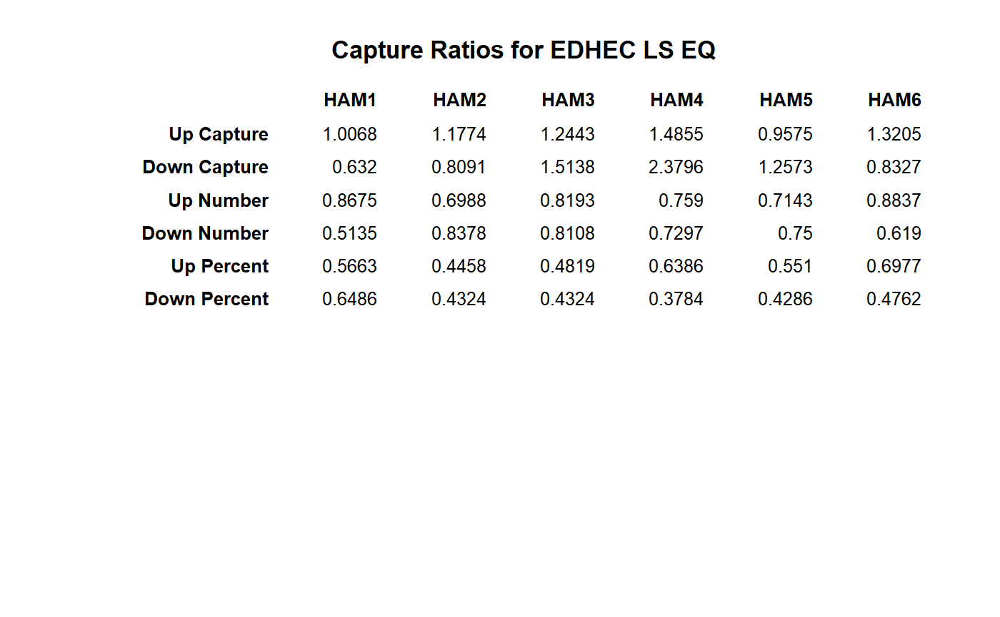

Creates a table of capture ratios and similar metrics for a set of returns against a benchmark.
table.CaptureRatios(Ra, Rb, digits = 4) table.UpDownRatios(Ra, Rb, digits = 4)
| Ra | a vector of returns to test, e.g., the asset to be examined |
|---|---|
| Rb | a matrix, data.frame, or timeSeries of benchmark(s) to test the asset against. |
| digits | number of digits to round results to for presentation |
This table will show statistics pertaining to an asset against a set of
benchmarks, or statistics for a set of assets against a benchmark.
table.CaptureRatios shows only the capture ratio;
table.UpDownRatios shows three: the capture ratio, the number ratio,
and the percentage ratio.
UpDownRatios, chart.CaptureRatios
data(managers) table.CaptureRatios(managers[,1:6], managers[,7,drop=FALSE])#> Up Capture Down Capture #> HAM1 1.0068 0.6320 #> HAM2 1.1774 0.8091 #> HAM3 1.2443 1.5138 #> HAM4 1.4855 2.3796 #> HAM5 0.9575 1.2573 #> HAM6 1.3205 0.8327table.UpDownRatios(managers[,1:6], managers[,7,drop=FALSE])#> Up Capture Down Capture Up Number Down Number Up Percent #> HAM1 to EDHEC LS EQ 1.0068 0.6320 0.8675 0.5135 0.5663 #> HAM2 to EDHEC LS EQ 1.1774 0.8091 0.6988 0.8378 0.4458 #> HAM3 to EDHEC LS EQ 1.2443 1.5138 0.8193 0.8108 0.4819 #> HAM4 to EDHEC LS EQ 1.4855 2.3796 0.7590 0.7297 0.6386 #> HAM5 to EDHEC LS EQ 0.9575 1.2573 0.7143 0.7500 0.5510 #> HAM6 to EDHEC LS EQ 1.3205 0.8327 0.8837 0.6190 0.6977 #> Down Percent #> HAM1 to EDHEC LS EQ 0.6486 #> HAM2 to EDHEC LS EQ 0.4324 #> HAM3 to EDHEC LS EQ 0.4324 #> HAM4 to EDHEC LS EQ 0.3784 #> HAM5 to EDHEC LS EQ 0.4286 #> HAM6 to EDHEC LS EQ 0.4762result = t(table.UpDownRatios(managers[,1:6], managers[,7,drop=FALSE])) colnames(result)=colnames(managers[,1:6]) textplot(result, rmar = 0.8, cmar = 1.5, max.cex=.9, halign = "center", valign = "top", row.valign="center", wrap.rownames=15, wrap.colnames=10, mar = c(0,0,3,0)+0.1)title(main="Capture Ratios for EDHEC LS EQ")